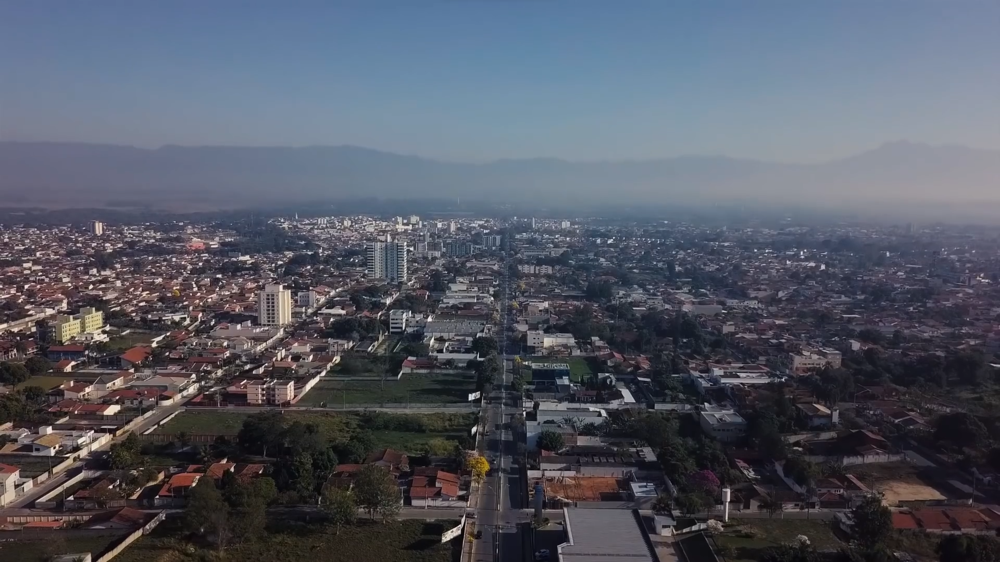

Lorena, São Paulo
Lorena is a city with about 90,000 residents, located in São Paulo state, Brazil. Lorena is also home to universities, a growing industrial sector, a rising number of places for physical activities, along with a rich historical heritage.
Learn More
